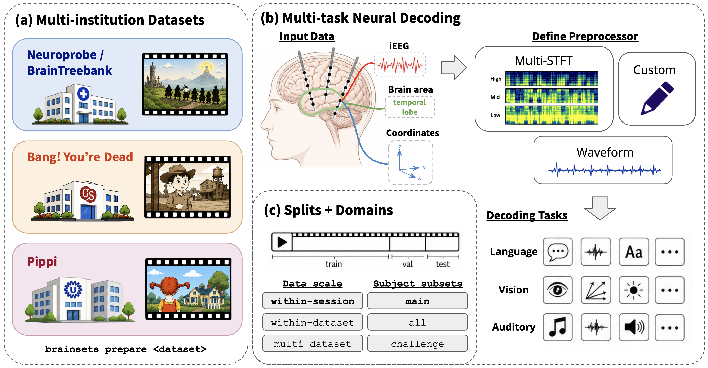
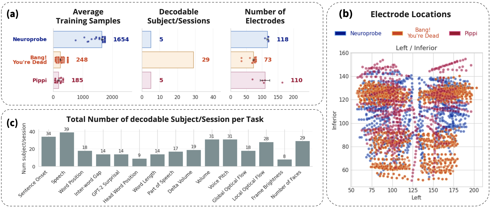

iMINDBench provides a multi-institution, multi-task, preprocessor-structured benchmark to evaluate iEEG Foundation Models' ability to benefit decoding regardless of recording institution or task, under comparable preprocessing tracks.
3 datasets and institutions 15 aligned decoding tasks 2+ preprocessing tracks
Benchmark Design
Three naturalistic datasets, explicit preprocessing tracks, and multiple decoding tasks spanning language, vision, and auditory tasks.

Dataset Diversity
Scale, task support, and electrode coverage vary substantially across the benchmark as expected from multi-institution datasets.
